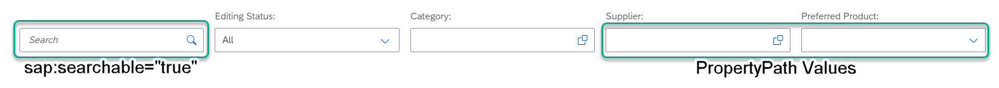

Metadata XML
<EntitySet Name="SEPMRA_C_PD_Product"EntityType="SEPMRA_PROD_MAN.SEPMRA_C_PD_ProductType" sap:searchable="true" sap:content-version="1"/>
For more information on configuring filter bar in list report, see Adapting the Filter Bar.
Please note that this topic is currently only applicable to SAP Fiori elements for OData V2.